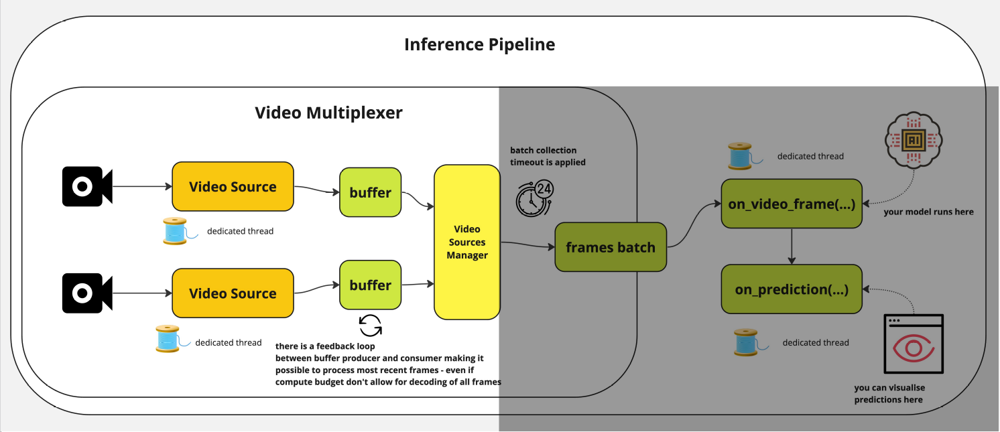
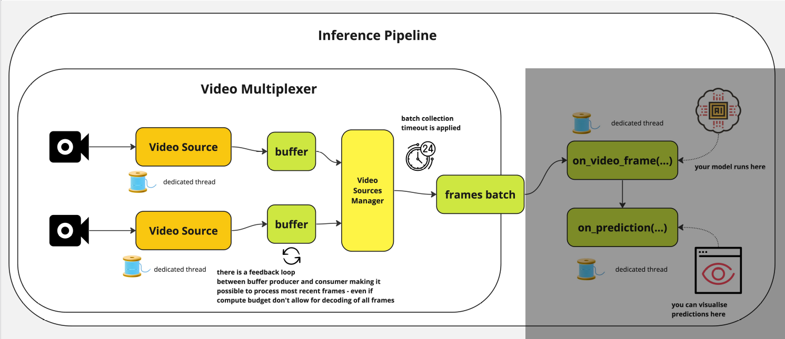
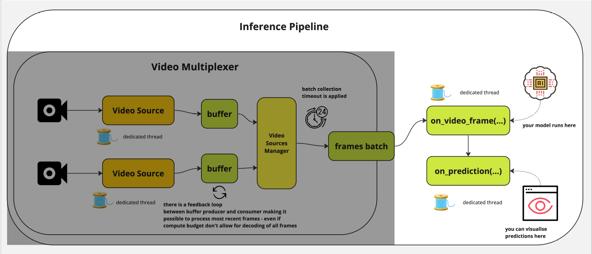

YOLO26 is the latest evolution in the YOLO series of real-time object detectors, engineered from the ground up for edge and low-power devices. It introduces a streamlined design that removes unnecessary complexity while integrating targeted innovations to deliver faster, lighter, and more accessible deployment.
YOLOE (Real-Time Seeing Anything) is a new advancement in zero-shot, promptable YOLO models, designed for open-vocabulary detection and segmentation. Unlike previous YOLO models limited to fixed categories, YOLOE uses text, image, or internal vocabulary prompts, enabling real-time detection of any object class. Built upon YOLOv10 and inspired by YOLO-World, YOLOE achieves state-of-the-art zero-shot performance with minimal impact on speed and accuracy.
What is Ultralytics?
Ultralytics is an AI startup best known for developing the modern YOLO (You Only Look Once) series of open-source computer vision models. They maintain the ultralytics Python package, simplifying the process of training, evaluating, and exporting models to hardware-accelerated formats.
The video illustrates NAS: Neural Architecture Search, an automatic hyper-parameter tuning method for deep neural networks, and employed by Roboflow when you train models on their platform:
Roboflow/train
Why Three Websites?
In the software and AI industry, companies almost always divide their web presence into these three distinct areas. Both in general and for Ultralytics specifically:
The www.\(\rightarrow\)The Storefront: High-level marketing, features, pricing, and sales.
The platform.\(\rightarrow\)The Workspace: The cloud-based app (GUI) where you log in to manage data, train models, and click buttons.
The docs.\(\rightarrow\)The Manual: Technical guides, code snippets, and API references for developers
What it is: The actual web application or cloud workspace (for Ultralytics, this routes to “Ultralytics HUB”).
Purpose in General: This is where the actual work gets done. It requires an account and a login. It is the graphical user interface (GUI) for the company’s cloud services.
What you do there: Upload datasets, click buttons to train models in the cloud, monitor active training runs, manage team access, and export finished models.
Target Audience: Registered users, data scientists, and project managers.
Purpose in General: To explain exactly how to install, write code for, and troubleshoot the software.
What you do there: Copy and paste code snippets, read API endpoint references, follow step-by-step programming tutorials, and figure out why an error code is happening.
Target Audience: Software engineers and developers who are actively writing code.
Related Libraries
While Ultralytics focuses heavily on creating the best model architectures and the underlying training engine.
Roboflow App: Upload data, annotate images, train and deploy models. Get your API key.
Universe: Browse and use community datasets and models. Pass any Universe model_id directly to Inference.
Inference: application workflows, deployment and serving.
Post-process results: decode predictions, plot bounding boxes, track objects, slice images for small object detection.
Unified Detections object that works with YOLO, SAM, Grounding DINO, Transformers, and 20+ model frameworks
Trackers: Clean, modular implementations of leading trackers.
Inference
Inference is an open-source computer vision deployment hub by Roboflow. It has several components that work together. The diagram below shows how they fit together:
inference-sdk - Lightweight Python client for communicating with the Inference Server.
inference-cli - Command-line tool for managing the Inference Server and running common tasks.
Inference Server - HTTP server (Docker) that wraps the inference package as a REST API.
inference - Core Python package for model loading, inference, and Workflows execution.
Video Streaming - Efficient InferencePipeline for consuming camera feeds, RTSP streams, and video files with automatic frame management and state tracking.
The most common way to use Inference is as a small part of a larger system.
It’s producing a response that is consumed by downstream code.
This response sometimes represents:
the prediction from a model (for example, a set of Detections containing objects’ categorization, location, and size in an image)
or the result of post-processing logic (like the pass/fail state of an inspection)
or an aggregation (like the count of unique objects seen over the past hour)
or a visualization
Image Input
For image workloads, the input is passed in as a parameter and the response is returned synchronously.
Figure: Inference as a Microservice
Example use-cases:
🏷️ Tagging of user-uploaded images to a website
⚙️ Determining if a machine is setup correctly before allowing it to turn on
💊 Counting the number of pills in an image
🔌 Detecting mismatched wiring in a finished circuit board
📐 Inspecting a manufactured good to ensure it matches the spec
✨ Validating that an object is defect and blemish free
Video Input
In the case of video streams, a visual agent (called an InferencePipeline) is started and runs in a loop until terminated. Responses are polled or subscribed to by the client application for display or processing.
Figure: InferencePipeline Video Streaming
Example use-cases:
👤 Blurring faces in a video
Inference as an Appliance
Inference can also be treated as an autonomous agent that continuously consumes and processes a video stream and performs downstream actions like:
Figure: Inference as an Appliance
updating a database
sending notifications
firing webhooks
or signaling hardware
In this paradigm, the full logic of the system is defined in a Workflow and the output is pushed to external systems.
Example appliance use-cases:
🛑 Stopping a conveyor belt if a jam has occurred
🛣️ Collecting highway traffic analytics
📹 Flagging suspicious activity in a security camera feed
🚚 Updating an inventory system as vehicles enter or leave a yard
🚨 Sounding an alarm when a scrap heap overflows
⏱️ Cataloguing retail customers’ wait time over the course of a day
Inference Pipeline
The Inference Pipeline interface is made for streaming and is likely the best route to go for real time use cases.
It is an asynchronous interface that can consume many different video sources including:
The InferencePipeline is designed for robust, multi-source video processing, delegating tasks to dedicated threads to maximize throughput and stability.
Figure: Inference Pipeline
1.1 Video Multiplexer: Reading and Buffering

Figure: Inference Pipeline
Concurrency: Spawns a separate consumer thread for each video source.
For Stored videos, it just processes every frame until it is done.
For Live streams: buffers accumulate frames if the compute budget is strained, ensuring the model can either:
process all frames without dropping any.
skip drops and just the process the most recent ones.
Auto-recovery: video sources will be automatically re-connected once connectivity is lost during processing. That is meant to prevent failures in production environment when the pipeline can run long hours and need to gracefully handle sources downtimes.
1.2 Video Multiplexer: Batching

Figure: Inference Pipeline
Collects incoming data into a frames batch based on a batch_collection_timeout.
If a source fails to provide a frame within the timeout, a smaller batch is passed forward.
Any missing frames (and their subsequent predictions) are safely padded with None before reaching the prediction stage.
2. Processing

Figure: Inference Pipeline
on_video_frame(...): Runs on its own dedicated thread, serving as the execution environment for your AI model.
on_prediction(...): Handles downstream tasks (like visualization) on a separate thread. Controlled by the sink_mode parameter, it can process incoming data in either:
Supervision is an open-source Python library by Roboflow for building computer vision applications. It provides a unified Detections object that works with: YOLO, Transformers, SAM, Grounding DINO, and 20+ model frameworks.
Trusted by researchers (cited in 4,000+ papers) and practitioners (38,000+ GitHub stars, 1M+ monthly PyPI downloads), Supervision is the standard toolkit for production computer vision workflows.
With Supervision you can:
annotate images and video with bounding boxes, masks, and labels;
track objects across frames with persistent IDs;
count and filter detections inside polygon zones;
load and convert datasets between YOLO, COCO, and Pascal VOC formats;
..and benchmark model performance with mAP and confusion matrices.
Supervision: Annotators
Annotators: Draw the detections with one of 20 annotators. Click the tabs to see the different annotators and their code:
{kind=link}

{kind=link}
{kind=link}